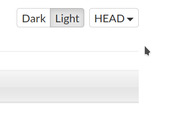

Hi there,
I’m trying to build a just cloned copy from the repository but without Angelscript and LUA, but it’s not working, its compiling ThirdParty/AngelScript and ThirdParty\LuaJIT. It used to work with the command
The Gradle properties can be passed by using “-P” Gradle option, e.g.: “./gradlew -P URHO3D_LUA=0 build” to build without Lua subsystem
wait @weitjong is out too?
extobias
I think only environment variables are taken by the new build system.
Is this deliberately removed? I could submit a PR (based on previous versions of the file) to support again command line options
WangKai
Hi,
I think you can change these parameters to apply the build flags ( e.g. -D URHO3D_LUA=0):
Hope it helps!
extobias
Yes, you’re right but by this way options are hardcoded in the build file. Before you could pass this options through command line.
WangKai
I didn’t try but I think you can try to modify the scripts to achive this-
extobias
I’ve found a way with previous build files and submit a PR. Still it would be nice to know why this changes were deliberately removed. Thanks anyway.
dertom
when I see it right all you need to do is to export the cmake-options as environment-variable.
In liinux:
export URHO3D_ANGELSCRIPT=0
I guess in win (not sure ):
set URHO3D_ANGELSCRIPT=0
And then call gradlew
ps: for me to compile the example at all I had to set URHO3D_LIB_TYPE=SHARED
weitjong
Sorry for late answer. In the last Gradle build system refactoring I have decided to remove the support for using “-P” to pass through the build option in order to simplify the build script and to reduce the possibility of conflict. The documentation file has been updated accordingly. If you guys ever look at the commit itself, you know it is intentional. Note that the site is no longer updated automatically anymore.
Using “rake” command, the build option can be passed like this:
It works on all host systems with Ruby/Rake installed. The last PLATFORM env-var is not needed when the command is invoked inside a running Android DBE docker container.
It is also possible to use “gradlew” directly like this:
However, this won’t work on Windows. You may have to create a simple wrapper yourself to set the env-var before invoking gradlew.
extobias
That’s ok, I didn’t know that the doc page doesn’t update anymore, so I thought that you can still pass the options from the list. Well I guess that if it was intentionally removed we have revert the PR
dertom
The problem is that the docs of 1.7.1 are shown as default (can we change this somehow?). You need to set this to ‘HEAD’ (to be honest, I also struggled with that)

extobias
In HEAD still says that you have a list of supported Gradle properties.
weitjong
Slightly off-topic and for those who has not keep track of all the recent threads. The migration from Travis CI to GitHub Action CI/CD was kind of being rushed. The new CI/CD workflow has not reached the feature parity with the old one yet when I made the cut over. The site documentation update is one of the thing missing. There are people trying to play “politic” in this project. May be not the best way to describe it but I have lost interest to complete what I have started. So, let the project die slowly and let those people happy.
Modanung
Let's run...
extobias
Sad news indeed, but somehow you could see it coming. There is anywhere some doc about the features missing in the new workflow? Just in case that someday someone want to take the lead.
And @weitjong thanks for your contribution.
weitjong
There is no roadmap nor migration plan. In fact I didn’t even know how to do GitHub Actions workflow a few months back when I started, the main reason I did it is simply to learn new skill for myself. Anyway, one can just compare between the old Rakefile and the new rakefile to spot any missing logic not yet migrated over. It is an apple to orange comparison though as the underlying design has changed.


 ):
):
{kind=link}